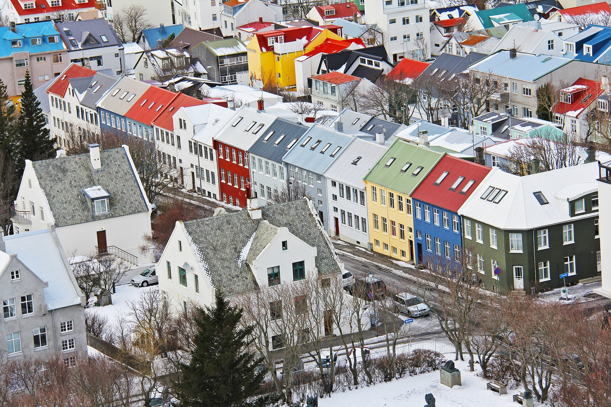
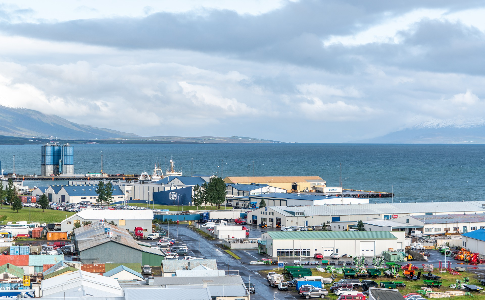

Iceland
Présentation
Ísland /ˈistlant/b, littéralement « terre de glace »),
en forme longue la république d'Islande (Lýðveldið Ísland)a,
est un pays insulaire d'Europe du Nord situé dans l'océan Atlantique.
Plus proche de l'Amérique du Nord du fait de sa proximité avec le Groenland,
le pays est rattaché
Reykjavík

est la capitale de l'Islande.
Elle se situe à environ 250 km au sud
du cercle polaire arctique,
ce qui en fait la capitale la plus septentrionale
d'un État souverain (la capitale du Groenland, Nuuk,
étant située quelques kilomètres plus au nord).
Elle s'étale entre deux fjords,
dans une zone comptant de nombreuses sources chaudes,
le long d'une baie (vík en islandais).
Elle est ainsi considérée comme la ville la
« plus verte du monde » :
on y compte environ 410 m2 d'espaces verts par habitant1.
Akureyri

est une municipalité et une ville du nord de l'Islande.
Elle est la capitale de la région Norðurland eystra et est
un important port maritime.
Avec une population de 17 754 habitants en 2011,
il s'agit de la quatrième ville d'Islande,
derrière Reykjavik, Hafnarfjörður et Kópavogur,
mais de la deuxième agglomération d'Islande derrière Reykjavik.
Elle est le plus grand centre de services dans le nord du pays.